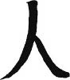

Peki... Dünyadan izole, kuşun uçmayıp kervanın mümkünse geçmediği bu adaya Japon halkı nereden gelmişti? Gökten zembille mi inmişlerdi?
Japonlar, gökten zembille indiklerine inanıyorlar (mecazen değil, kelime anlamı ile). Japon adalarının, tanrılarının ve halkının varoluş hikâyesi birçok metaforu barındıran bir erotik-mitolojik hikâye. Tanrı İzanagi (esas oğlan) ile tanrı İzanami (esas kız) iki kardeştir. Abileri İnzaghi cennetten kaçıp İtalyan liginde futbolcu olduktan sonra, İzanagi ve İzanami Tanrılar Yönetim Kurulu tarafından dünyaya yaratılış için gönderiliyorlar. İki kardeş okyanusun üzerinde, havada asılı bir köprüde, üzerine basacak hiçbir kara parçası olmadan kalakalınca, yukarı seslenip görmüş geçirmiş tanrılardan yardım istiyorlar. Yukarıdan iki kardeşe mücevherlerle kaplı bir mızrak gönderiliyor. İzanagi bu mızrak ile okyanusu karıştırmaya başlıyor, mızrağı sudan çıkardığında ucundan damlayan damlalar da kristalleşerek Japon adalarını oluşturuyor. Böylece üzerinde eyleme geçebilecekleri bir kara parçası vücuda geliyor. Daha sonra İzanagi (anlamı “davet eden erkek”), İzanami’ye (onun da anlamı haliyle “davet eden kadın”) nasıl olduğunu soruyor.
İzanami: Her şey yolunda... Mutluyum ve yaşıyorum. Ancak içimde bir boşluk var.
İzanagi: Ben de öyle hissediyorum... Bir farkla, bende bir boşluk değil, fazlalık var! Neden o zaman bendeki fazlalıkla sendeki boşluğu bir araya getirmiyoruz?
Ve harekete geçiyorlar. Ancak gayet özürlü ve hilkat garibesi bir çocukları oluyor. “Biz nerede yanlış yaptık” diyerek tekrar yukardaki tanrılara danışıyorlar. “Siz de amma soru sordunuz” diyen tanrılar ipucunu veriyor: Cilveleşmeyi kadın değil, erkek başlatacak! Böylece, bugün bile geçerli olan Japon kadınının toplumdaki çekinik rolü, daha yaratılmadan çiziliyor: Ağzını fazla açma, her şeyi kocana bırak!
Bu tavsiye üzerine dizginleri eline alan İzanagi, hemen İzanami’ye yaklaşıp Kazanovavari iltifatlara başlıyor:
“Sen ne kadar güzel bir kızmışsın öyle!”
“Sen de çok tatlı bir oğlanmışsın.”
Doğru sıralamayla işe başlayınca hayırlı sonuçlar ortaya çıkıyor ve Şinto inanışındaki tanrılar birer birer Japonya topraklarında doğmaya başlıyor. Ancak İzanami ateşten bir bebeği doğururken ölüyor ve yeraltı dünyasına gidiyor. Çok üzülen İzanagi de onu takip ediyor ve orada eşini/kızkardeşini buluyor. Ancak yeraltı dünyasının yiyeceklerinden bir kez yemiş bulunan ve ürkünç bir yaratığa dönüşen İzanami’nin yeryüzüne dönmesi artık mümkün olmuyor. İzanagi korku içinde yeraltı dünyasının girişi olan mağaranın ağzını büyük bir kayayla kapatarak kaçıyor. İzanami, “Beni burada bırakıp gidersen her gün dünyadan 1000 can alırım” diye bağırıyor; İzanagi de, “Ben de her gün 1500 yeni cana hayat veririm” karşılığını veriyor ve Japon adalarında hayat başlıyor.
Bu hikâyenin benzerlerinin Yunan, Maya ve Sümer mitolojilerinde de yer aldığı bilinmekte. Mitolojide dünyanın yaratılışındaki kadın-erkek dengesinin vurgulanmasına ve doğu felsefesinde önemli yer tutan yin-yang güçlerine göndermelerde bulunmasına bakılarak Japon yaratılış efsanesinin evrensel semboller taşıdığı belirtiliyor. Hikâyede İzanami’nin ateş-bebek doğururken ölmesinin ise, ateşe atfedilen kültür-bilgi-teknolojik gelişme gibi unsurların insanlık tarihinde uğursuzluklara ve felaketlere yol açacağını ima ettiği yorumlarını da okumuştum.
İzanami’nin ölümünün ardından İzanagi’nin gözünden doğan, yani tam anlamıyla gözünün nuru olan güneş tanrıçası Amaterasu ise ayrı bir öneme sahiptir. Japon imparatorluk hanedanının “cenneti aydınlatan” anlamına gelen Amaterasu’nun soyundan geldiğine inanılıyor ve imparatorların tanrısal kimlikleri böylece tanrıların soyağaçları ile ilişkilendiriliyor. Tamam, efsane olarak kulağa hoş geliyor, Asena da bizi Altay dağlarından çıkartmıştı; ancak halen buna inanan çok sayıda Japon mevcut!
Biraz daha akılcı ve bilimsel takılan Japonlar ise, ırklarının kökleri hakkında araştırmalar yapıyorlar. Bu araştırmalara göre, Japon adalarına ilk kez Kore yarımadasından geçildiği kuvvetle muhtemel; zaten ırk olarak da Çinlilere pek benzemeyen Japonlar, Korelileri ve Moğolları daha çok andırıyor. Milliyetçi Japonlar ise Kore üzerinden gelen hiçbir olguyu (dil, kültür, mutfak, sanat ve din gibi...) kabul etmiyor. Örneğin, Budizm de Japonya’ya Kore üzerinden gelmiş, Japon mutfağının bazı öğeleri de. Ancak Japonlar genelde Koreyi atlayarak Budizmin Çin’den geldiğini iddia ederler. Çünkü Koreliler daha alt bir ırktır; Çinliler ise ehven-i şer’dir ve Çin kökenli bir olgu “mecbur kalınırsa” kabul edilebilir.
Sonuçta, kökenleri ve kim oldukları konusunda Japonların bile kafası karışıkken benim sizi aydınlatmam söz konusu olamaz. Kitabın giriş bölümünde ileri sürdüğüm teoriye dönersek, Japonlar dünya üzerindeki herhangi bir milletle karşılaştırıldığında uzaylıdır. Nokta.
Bu yüzden, Japonların nereden geldiklerinden ziyade, ırk olarak özellikleri daha çok ilgi çekegelmiştir. Herhalde Japon ırkının en önemli özelliklerinden biri gayet homojen olmasıdır. Yüzyıllarca kapılarını dış dünyaya kapatan bir ada toplumu için beklenmedik bir özellik değil tabii bu durum; bu yüzden bölgesel farklılıkları ancak küçük detaylar ayırt eder. Biz batılılar içinse en büyük geyik konusu, “Abi, bunların hepsi birbirine benziyor”dan ibarettir.
Son yıllarda nüfusun da azalmaya başlamasıyla Japonya’ya artan göç, Japon hayat tarzından bunalan gençlerin başta Amerika olmak üzere “batı”ya kapak atmaları ve uluslararası evlilikler yoluyla bu homojen yapı bozulma eğilimine girmiştir. Sapıkça bir fikir olduğunu biliyorum ama, Japon halkı nesli korunması gereken endemik bir tür gibi geliyor bana. Japonların ülke dışına kaçırılmalarının önlenmesi, diğer türlerin onların yaşam alanına sokulmalarının yasaklanması, Japonya’nın milli park ilan edilmesi ve Japon halkının, özelliklerini muhafaza edebileceği korunmuş bir bölge oluşturulması gibi bir fanteziyi teklif edesim geliyor...
Japon halkı, genellikle olumlu çağrışımlar yapan özellikleri ile anılır. Çalışkan, gururlu, temiz, dürüst, naif, okuyan, yazan, güven veren... “Japon yapmış”tır; yapmışsa iyi yapmıştır. Çalışkanlık için söylenecek bir şey yok; dünyada aşırı çalışmanın kayda değer bir ölüm sebebi olduğu başka bir ülke olduğunu sanmıyorum. Dürüstlük konusunda da bu dünyanın ötesinde standartlara sahiptirler. Japonlar dürüst davranırken bunun bir erdem olduğunu bile düşünmezler; dürüstlük zaten normal olan davranış biçimidir.
Üç küsur yıl içinde benim daha çok ilgimi çeken ise, duyarlılıkları, hüzünleri, saflıkları ve hayal dünyaları oldu. Bu özellikler Japon halkını bazen uzaylı olmaktan çıkarıp insan kategorisine sokuyordu; bazen de bu dünyadan iyice uzaklaştırıp uzayın derinliklerine gömüyordu.
Bu halleriyle Japon halkı bende hep bir hüzün hissi uyandırdı. Japonlara her zaman içine biraz acıma hissi katılmış bir sempati ile baktım. Sonradan düşündüğümde, dünyadaki halkları “acınacaklık” katsayılarına göre sıralasam, zengin ve tuzu kuru Japon halkının en sonlarda yer alması gerekirdi. Ancak dünyaya karşı yabancılıkları, gerçekliğe karşı eğreti duruşları, bir şeyleri kaçırıyor olduklarını bilmenin verdiği buruk ızdırap insanların yüzüne yansıyordu. Japon halkının ruhuna ilişmiş tüm bu aksesuarlar yumuşak ve sempatik görünüşleri ile birleşince, ister istemez onlara kedi yavrusuna bakan gözlerle bakıyordum.
Konuyu biraz daha açmak gerekirse, Japon halkının buluştuğu ortak paydanın hüzün olduğu sonucuna vardım. Bu sonuca varmak kolay olmadı, belki de altta yatan hüznü bulabilmek için ben kendimi fazla zorladım. Dilbilgisindeki gizli özne kavramı gibi toplumda da bir gizli hüzün vardı, ama vitrinde sorunsuz bir halk görüyordunuz.
Japon hüznü, bizim hüznümüzden farklı bir boyutta seyrediyor. Bunun sebebi, hayat, ölüm, sevgi, görev, sorumluluk ve daha birçok yaşamsal kavramın Japon toplumunca farklı algılanması. 2005 yılında Osaka yakınlarında meydana gelen ve yüzden fazla insanın ölümüyle sonuçlanan tren kazasının ardından bu olguyu daha iyi kavramıştım. Kazanın kendisi ayrı bir trajediydi; önceki istasyonlarda zaman kaybeden ve çizelgenin gerisine düşen makinist, arayı kapatmak için gazı kökleyince tren raydan çıktı. Hatta kazanın sebebi Japonya’da bir tartışma başlattı; kusursuz olmaya çalışmak, kusurların en büyüğüne sebep olabiliyordu. Japon sisteminin küçük hatalara hoşgörüsü olabilseydi, makinist o büyük hatayı yapmayabilirdi.
Kazanın beni en etkileyen tarafı ise, yakınlarını kaybedenlerin kaza sonrasında gösterdikleri tepkiler idi. Türkiye’de böyle bir kaza ertesini gözlerimin önüne getirdim; yana yakıla ağlayanlar, feryat edenler, ağıt yakanlar içimizi parçalardı. Ama kazada yakınlarını kaybeden Japonların yüzünde sadece şaşkın bir hüzün ifadesi vardı; ağızlarından tek dökülebilen ise, “Böyle olmamalıydı... Çok üzgünüm... Gerçek olamaz... Hâlâ inanamıyorum” gibi soğukkanlı ve duygudan yoksun görünen cümlelerdi.
Bu insanlar için ölüm, gerçeklikten son derece uzak bir kavram gibiydi... ya da aksine, gerçeğin ta kendisi, tam karşılığı idi. Ölüme, özellikle umulmadık bir ölüme karşı bu derece kayıtsız kalabilmek duygusuzluk gibi gelse de altta yatan ve dışarı vurulmayan hüznü hissedince içiniz parçalanıyordu.
Japonya’da birkaç Japon arkadaşın babalarının veya dedelerinin ölümlerine şahit oldum. Mırıldandıkları cümleler ölüme inanamamak ile ölümün ne kadar normal olduğunu onaylamak arasında savruluyordu. Dini inanışlarından gelen doğum-ölüm döngüsünün doğallığı ve reenkarnasyon (ruhgöçü) inançları ile, yarattıkları kusursuz modern dünyanın ölüm karşısında çaresiz kalmasının yol açtığı düş kırıklığı bilinçaltlarında çatışıyordu.
Japonların gizli hüznünü insana en çok hissettiren unsurlardan birisi de hayal dünyaları... Belki uzayın derinliklerinden kopup geldikleri, dünyaya karşı yabancı hissettikleri için hayal dünyaları da bir başka çalışıyor Japonların. Bazen bir kişiye, nesneye, yöreye ait tutkuları insanüstü bir hal alıyor; ama bu tutku, bir futbol takımına tutulmak şeklinde değil; hayalleri ile farklı bir boyutta yer aldıklarını düşünerek o kişiye, nesneye, yöreye imkânsız bir tutkuyla bağlanıyorlar. Hal böyle olunca da düşleri ile düzeyli bir ilişki kuruyorlar. Tutku ile bağlandıkları çöl de olabilir, kutup da; yağmur ormanları da olabilir, bir cins geyik de... Örneğin, yıllarca kutba gitmenin, kutupta yaşamanın, kutupları keşfetmenin ya da çölleri aşmanın hayaliyle yaşayabilirler. Bunlar gerçekleştirilmesi çok da imkânsız hayaller değil aslında; hayal statüsünde kalmalarının sebebi, Japonların kendilerini bu tutkularıyla aynı dünyada hissetmemeleridir.
Japonların hayalleri ile kurdukları güçlü bağ beni hep şaşırtmıştır. Örneğin, hayali yağmur ormanlarına gitmek olan bir Japon, bu konudaki her bilgiyi bir akademik araştırmacı titizliği ile araştırır, öğrenir, gidip görmek dışında yağmur ormanlarını tüm benliği ile hisseder. Benzer şekilde, Türkiye’yi seven Japonlarla tanıştım. Türkiye’ye hiç gelmemiş veya Türkiye’de çok az bulunmuş bir Japonla Osmanlı tarihi üzerine derin bir sohbete dalıp bir süre sonra bilgi dağarcığınız tükenince afallıyorsunuz. Türkiye tutkunu bir Japon, sizin duymadığınız müzisyenlerden bahsedip tatmadığınız yemeklerin tariflerini verebiliyor, Türkiye’den bahsederken kendinden geçebiliyor.
Ama tabii ki Japon toplumu da artık kabuklarını kırıyor ve Japonlar hayallerinin peşinden seğirtebiliyor. Dünyanın herhangi bir köşesinde, kendini oraya adamış bir Japonla karşılaşabiliyorsunuz. Hayalini gerçekleştirmiş olsa bile, benim gözüme çarpan öncelikle bir hüzün oluyor; hayalleri ile farklı dünyalardan olmalarından kaynaklanan... Bu hüzün hali bana oldukça sempatik geliyor; gürültülü, insanı yıpratan, tüketen değil, sessiz, vakur, saygılı, utangaç ve kabullenmiş bir hüzün olduğu için.
Japon romantizmine de hüzün hâkim olmuş. Efsanelerde, edebiyatta, tiyatroda ayrılık kavuşmaktan daha makbul! Âşıkların çektiği acılar ve ızdıraplar, bir araya gelmenin mutluluğundan daha çok prim yapıyor. Daha doğrusu, âşıklar kavuşunca sonrasını nasıl getireceklerini bilmiyorlar. Kavuşmaktan, sanki bir ilişkinin bütün büyüsünü bozacakmışcasına kaçınıyorlar. Aşkın saf, ulaşılmaz, hayali, dünya dışı, hatta tanrısal olması tercih sebebi. Bu özellikleri başka doğu toplumlarında da gördüğünüzü, bunların size hiç yabancı gelmediğini düşünüyor musunuz?